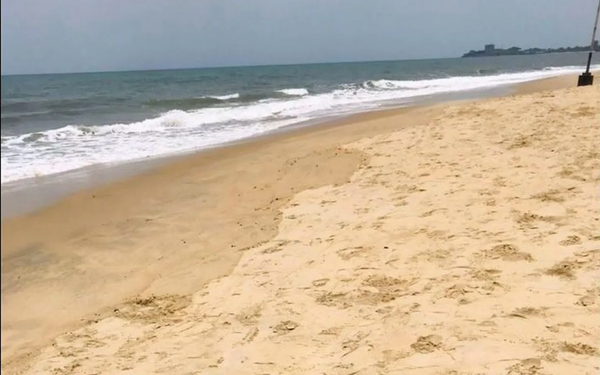

Sierra Leone · ...land that we love
Reference photo · River No. 2 · Daniel Camejo Rodríguez / Unsplash
See Sierra Leone in full.
People. Music. Culture. Places. Stories.
Sierra Leone Now
What’s moving.
Fresh stories, people and culture.

Discover
Start with the country itself.
Coast. City. Heritage. Nature. Everyday life.
First time in Sierra Leone?Culture
Sound. Style. Language. Food.
Culture people can enter.



SLTT field archive · Lumley BeachThen & Now
See what changed.
Photographs, maps, place names and memory—connected to Sierra Leone today.
Explore the archive →Watch
See and hear Sierra Leone.
Temporary reference video until SLTT-owned footage replaces it.
IndependentNot a government or party platform.
VerifiedClaims need evidence.
ClearArchive and sponsorship stay labeled.
CorrectableErrors get fixed.
Prototype media: Temporary rights-cleared reference imagery will be replaced progressively with commissioned Sierra Leone photography.